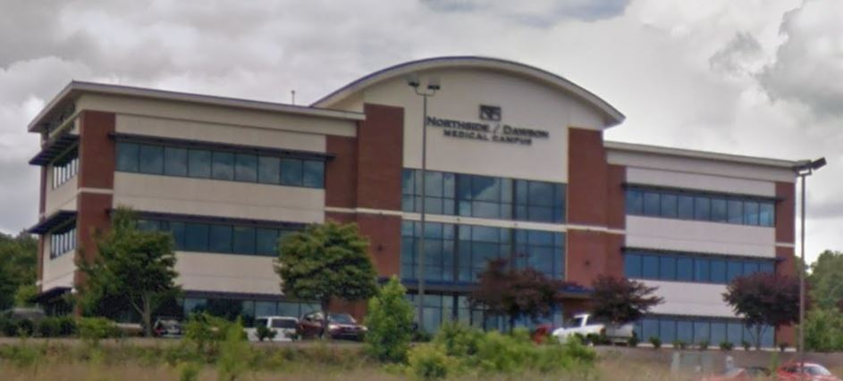

Dawsonville Clinic
(New Address) 81 Northside Dawson Dr, Suite #305, GA 30534
Our Dawsonville Clinic is located in the Northside Dawsonville Medical Campus. The large building visible while driving on Highway 19 is off the service road of Highway 19 just north of the Outlet mall. A big sign saying “Northside Dawsonville Medical Campus” is on the medical office complex. There are a Captain D’s and Culvers restaurants nearby. Our office is in Suite 305.

Click on map below to be taken to google maps for directions from your location.